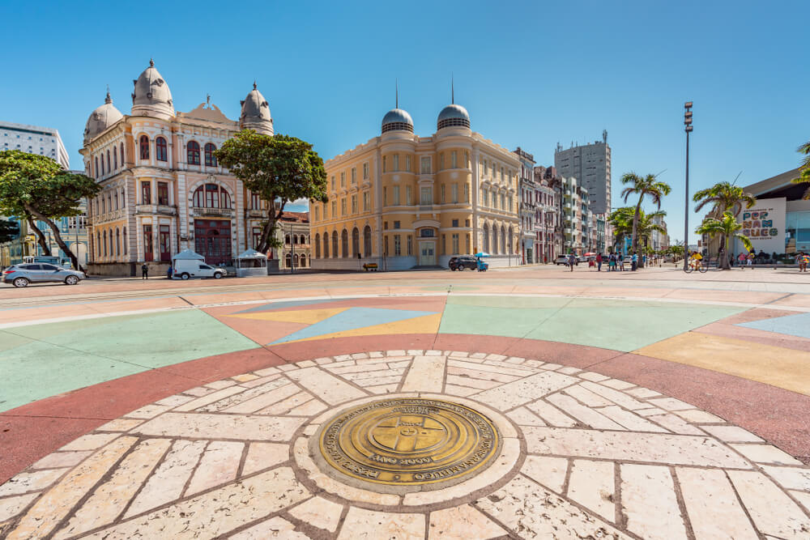

Recife é uma cidade que vale a visita devido às várias atividades para serem feitas. Tem praia, tem museu, festas agitadas, um dos carnavais mais famosos do Brasil, e é claro comida boa.
Neste lugar, um dos principais pontos turísticos de Recife, além de poder conhecer a história do local, podem-se encontrar diversas lojas de artesanato.
Deste ponto, é fácil o acesso a diversos outros pontos turísticos, como o Museu Cais do Sertão e a Capela Dourada.
